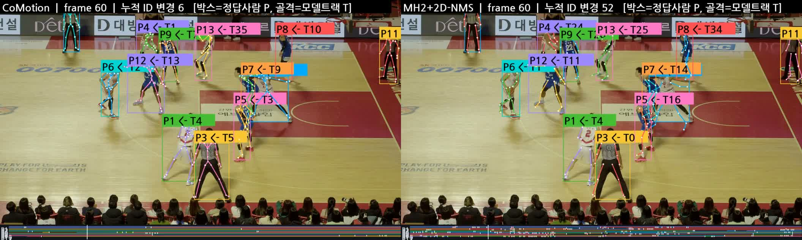
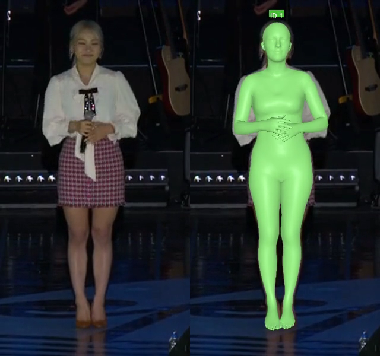

Video to motion
영상 속 행동을 찾아, 같은 사람의 3D 모션으로.

Overview
하나의 행동, 하나의 사람,
하나의 모션 데이터.
ETRI 과제에서 기존 영상의 행동 구간을 찾고, 대상 인물의 3D 모션과 설명을 연결하는 데이터 구축 파이프라인을 연구합니다. 로봇 학습용 데이터를 만들기 위해 원본 영상, 시간 구간, 인물 ID를 함께 기록하는 구조를 설계했습니다.
GPU 실행 환경과 모델별 실행기, 출력 파서, 3D 복원 모델 비교 및 대상 인물 분리를 담당했습니다. 동작 구간과 인물의 일관성을 검수하는 과정에 집중하고 있습니다.
Tracking demo
사람이 바뀌면,
모션 데이터도 섞입니다.
Multi-HMR 2의 중복 인체 검출을 박스 겹침과 중심 위치로 줄였습니다. 다만 중복 제거가 ID 유지까지 보장하지는 않았습니다. 파일럿에서 테니스의 주된 ID 대응 비율은 93.7%에서 99.7%로 개선됐지만, 농구의 ID 전환은 89회에서 132회로 늘었습니다.
장면별 파일럿 결과이며, 위 수치는 3D 자세 정확도와 다른 추적 지표입니다.
Temporal grounding
짧은 동작은 FPS만으로 해결되지 않았습니다.
농구의 짧은 드리블·슛 구간을 찾기 위해 7개 모델, 5개 FPS, 2개 영상, 3개 쿼리의 210개 응답을 비교했습니다. FPS를 높이면 입력에 짧은 동작이 들어올 가능성은 커졌지만, 구간을 너무 넓게 반환하거나 없는 행동을 찾는 문제가 남았습니다.
표시 시각은 원본 프레임을 보고 작성한 검토용 초안 라벨입니다. 독립 검수로 확정한 정답 구간은 아닙니다.
후속으로 Qwen3-VL의 2초 구간 행동 판별을 TimeLens2 앞에 연결했습니다. 없는 슛을 제거한 사례와 실제 드리블까지 누락한 사례가 함께 나타났습니다. 따라서 오탐 감소만으로 성공을 판단하지 않고, 놓친 동작과 처리 비용을 함께 비교했습니다.
3D reconstruction
필요한 인물만 남겨,
복원의 입력부터 조정했습니다.

전신을 유지하면서 배경 인물이 들어오는 영역을 줄여 CoMotion을 다시 실행했습니다. 특정 장면에서 동일 인물을 유지한 결과를 확인했으며, 다른 장면에 대한 일반화는 별도로 검증합니다.
PHALP + 4D-Humans도 재현 가능한 설치·실행 가이드로 정리했습니다. RTX 5090의 새 환경에서 공연 12프레임과 농구 60프레임의 추론 실행을 확인했습니다.
Stack & evidence
실행 결과를 다음 실험의 기준으로.
Python / PyTorch / FFmpeg / TimeLens2 / Qwen3-VL / CoMotion / Multi-HMR 2 / PHALP / 4D-Humans / Docker